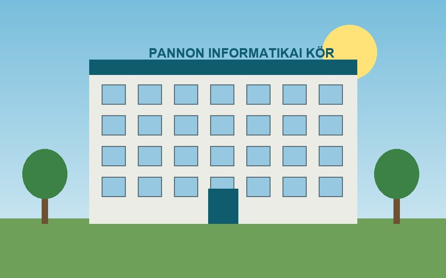

Képzések
Irodai alkalmazások, online biztonság és ICDL-felkészítés kis csoportokban.
Tovább »A Pannon Informatikai Kör 2009 óta segíti a Veszprém megyei kis- és középvállalkozásokat a számítógépes rendszerek üzemeltetésében, a munkatársak képzésében és az adatok biztonságos kezelésében.

Irodai alkalmazások, online biztonság és ICDL-felkészítés kis csoportokban.
Tovább »Havidíjas üzemeltetés: karbantartás, felügyelet, ügyfélszolgálat.
Tovább »Automatikus mentés, felhőtárhely és visszaállítási próbák.
Tovább »